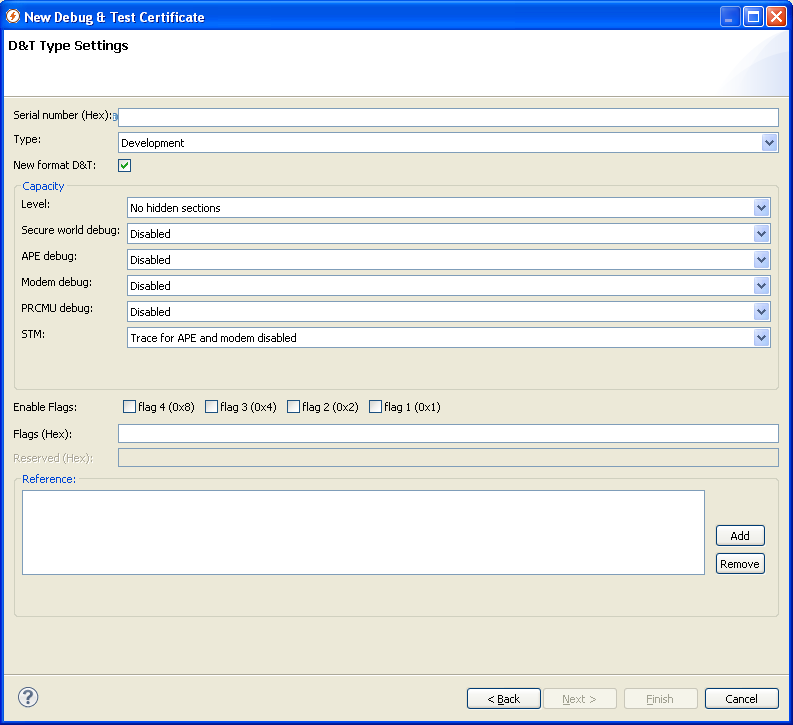

How to create a U5500/U8500/M7400/L9540 Debug & Test Certificate
The Debug & Test (D&T) certificates are certificates with the purpose of enabling debug on protected devices.
Each D&T certificate is issued for a particular device or a batch of devices. This is done by including the public device unique identifier, or the batch id from the OTP.
The D&T certificate contains information on whether to allow trace and debug of the platform. Trace and debug is controlled separately for APE side in secure world, APE side in normal world, and the ACC side.
The D&T certificate is optional and is normally not present in flash, if present, it is a separate item in the TOC. If present the ISSW is responsible for verifying the D&T certificate and enable debug based on its settings.
Additionally, the D&T certificate can be used to replace keys in the ISSW key list with new keys which are available to a developer, which simplifies the debug and testing.
Only keys are replaced, the mapping of a key to which software that is protected cannot be changed.
Pre-requisites
Please make sure that you have access to a U5500/U8500/M7400/L9540 root sign package or a signed ISSW file.
Instructions
Open the U5500 Debug & Test Certificate Wizard by completing the following steps:
- In the Eclipse menu, select File -> New > Other... (or press Ctrl+N)
- Expand the Flash Kit category to make the Certificates category visible
- Expand the Certificates category to see the Debug & Test Certificate
- Select the Debug & Test Certificate and press Next
The following dialog will pop-up and user must provide valid values to generate new Debug & Test Certificate.
Page 1

Required Fields:
- Serial number (Hex): The serial number is a unique number for each D&T certificate which can be used to distinguish and keep track of issued certificates.
- Type: A data element indicating what type of device the certificate is valid for.
- New format D&T: Check box indicating new or old format D&T certificate.
- Level: Flag to disable or enable hiding of certain sensitive data.
- Secure world debug: Enable or disable secure world debug.
- APE debug: Enable or disable APE debug.
- Modem debug: Enable or disable modem debug.
- PRCMU debug: Enable or disable PRCMU debug.
- Enable Flags: This is used for easy manipulation of the Flags field (see below for more details)
- flag 1 - Permanent Authentication
- flag 2 - Permanent Authentication if Magic Word Hash is correct
- flag 3 - Add keys instead of replacement
- flag 4 - Enable Development RPMB Authentication Key
- Flags: The flags are enabled only if New format D&T is checked. Note that type 3 and type 4 variant of the D&T certificate can only be created in new format therefore when chosen, the New Format D&T is automatically selected. The least significant bit of the word (flag 1) is used to indicate that the platform should be switched to the permanent authentication state. I.e., if such a certificate is available, COPS will not require authentication.
- Reserved: This is used only for type 3 variant of the D&T certificate.
- Reference: Contains the one or several chipset ids, or one or several batch ids.
Page 2

Required Fields:
- Source ISSW: This can either be a signed ISSW file or an ISSW certificate stored in sign package.
- Replacement keys: To replace a key, check the corresponding checkbox in the Replace column and select the key file by pressing the Browse button.
- Revocation hash types: To revoke hash algorithm, check the checkbox in the corresponding hash type column (HASH_1, HASH_256, HASH_384, HASH_512, HMAC_1, HMAC_256, HMAC_384, HMAC_512) which should be revoked.
- Output file: The path to where to write the unsigned D&T certificate.
If the wizard is not finished early, the last optional page includes Software Signing.
This is convenient if you want to create a certificate and then sign it at once. For details see
How to create U5500/U8500/M7400/L9540 signed software